Project Overview
This project investigates how the physical geometry of a minimal wheeled-biped robot can be engineered to provide passive stability and reduce the burden on active control — a principle known as morphological intelligence. Rather than treating the robot's body as a fixed constraint, the design itself becomes a lever for improving performance.
Conducted at the Novel Mobile Robots Lab and Human Dynamics and Controls Lab at the University of Illinois Urbana-Champaign, this work combines a linearized analytical model, a nonlinear simulation with hardware-accurate actuator and sensor models, and a purpose-built adjustable geometry hardware testbed (V3). The goal is to map hip link length, wheel radius, and COM placement to quantitative stability metrics, targeting a workshop paper submission to IROS 2026.
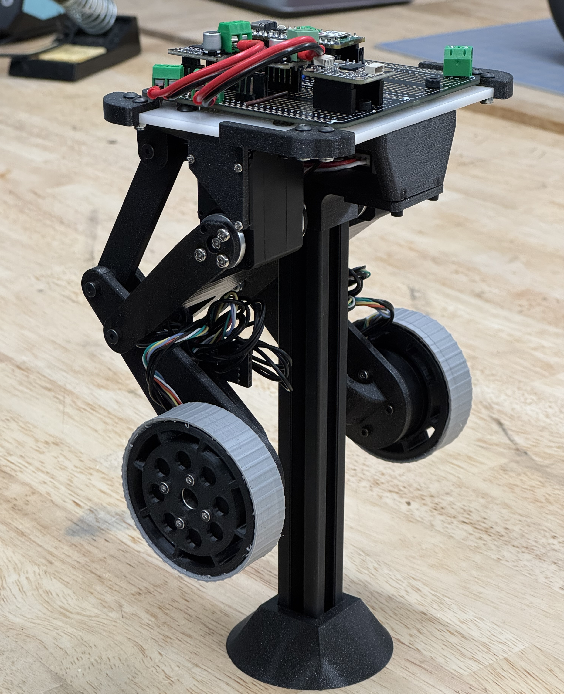
Hardware Evolution: V1 → V2 → V3
Two prior prototypes were built during summer 2025 to establish the basic wheeled-biped architecture and electronics integration. V1 was a minimal proof-of-concept with a white 3D-printed chassis, establishing the coaxial wheel layout and basic balance controller. V2 scaled up to a full black aluminum-extrusion frame with onboard electronics, hip actuation, and Bluetooth teleoperation — but both used fixed geometry and could not support a systematic morphological study.
The V3 platform is the central hardware contribution of the project, specifically designed to allow controlled variation of hip link length, wheel radius, and COM height while holding everything else fixed. It features a modular spine with a sliding battery tray, swappable 3D-printed hip links implemented as four-bar linkages, and a family of interchangeable wheels with TPU tires spanning the full swept radius range.
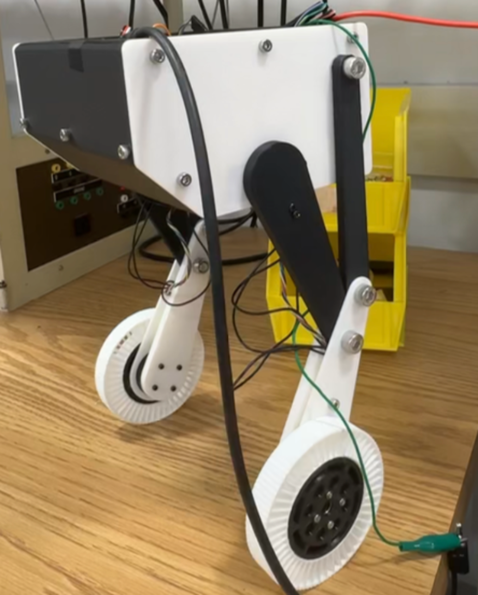
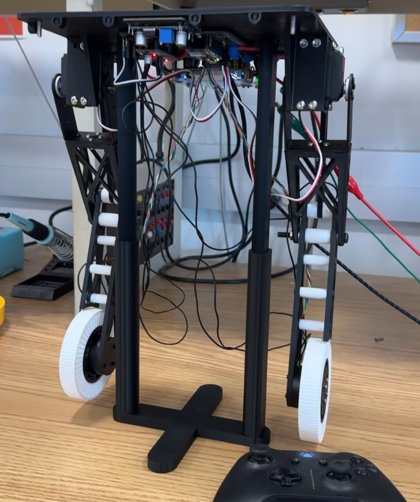
V1 & V2 Videos
Adjustable Morphological Configurations
The study sweeps five hip link lengths (L ∈ {8, 11, 14, 17, 20} cm) and six wheel radii (r ∈ {3, 4, 5, 6, 7, 8} cm), yielding 30 configurations organized around the dimensionless ratio ρ = L/r. The diagram below illustrates representative combinations across short, medium, and long links paired with small, medium, and large wheels — each producing a qualitatively different inverted-pendulum dynamics.
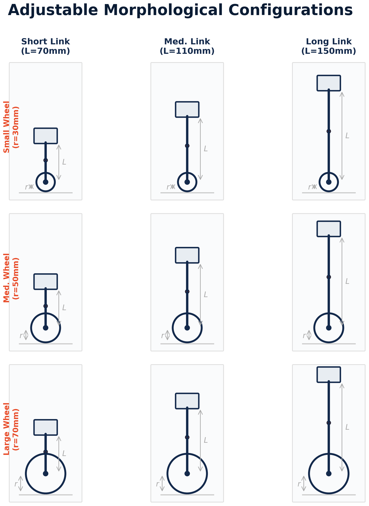
System Model and Linearized Analysis
The robot is modeled as a planar two-body system: a wheel (mass m₁, radius r) rolling without slip on the ground, and a chassis (mass m₂) connected by a rigid hip link of length L. Generalized coordinates are wheel rotation θ₁ and chassis lean angle θ₂. A Newton-Euler free body analysis yields coupled nonlinear ODEs integrated with RK4 at 10 kHz in simulation.
Linearizing about the upright equilibrium produces a 4×4 state-space system. Two competing trends emerge: the unstable eigenvalue scales as λ ≈ √(g/L), so shorter links fall faster and demand higher control bandwidth. Meanwhile, smaller wheels generate more horizontal ground force per unit torque (F = τ/r), giving more authority before saturating the 3 A driver current limit. These trends argue against any single naive optimum and motivate the full factorial sweep.
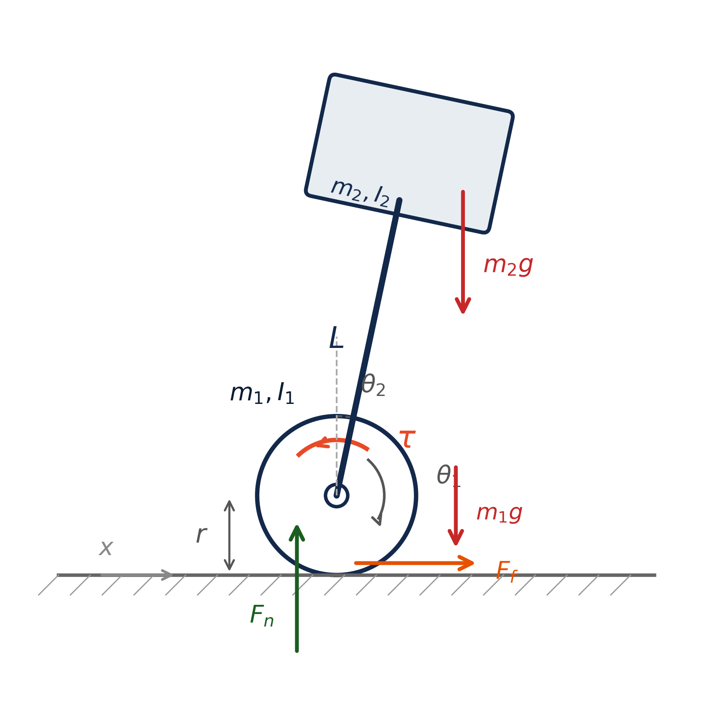
Four-Bar Hip Linkage Design
Each hip link is implemented as a four-bar linkage rather than a direct revolute joint, so the wheel attachment point traces a near-straight vertical line over the working stroke. A revolute joint would sweep the wheel along a circular arc, coupling vertical motion into horizontal COM displacement and complicating the balance problem. Linkage parameters were optimized using differential evolution followed by Nelder-Mead local refinement, achieving RMS lateral deviation on the order of fractions of a millimeter — well within 3D print tolerance. The optimizer is rerun for each hip link length in the sweep to preserve the straight-line property across all V3 configurations.
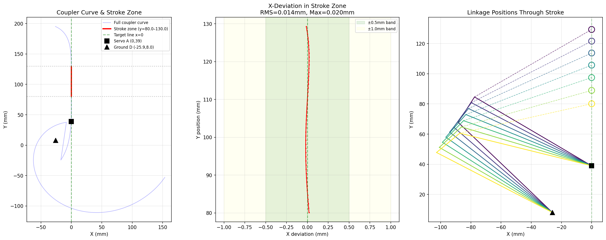
Nonlinear Simulation Environment
A nonlinear time-domain simulation was developed to capture actuator saturation, sensor noise, and closed-loop dynamics beyond what the linearization can predict. The GM3506 motor is modeled from datasheet parameters (K_T = 0.078 Nm/A, R = 5.6 Ω, 3 A driver limit) with a speed-dependent back-EMF torque ceiling. AS5048A encoders are quantized at 14 bits; BNO085 IMU readings carry Gaussian noise matching the datasheet. A cascaded PID controller runs at 500 Hz with gains scaled by dimensional analysis across all configurations, isolating morphological effects from controller tuning.
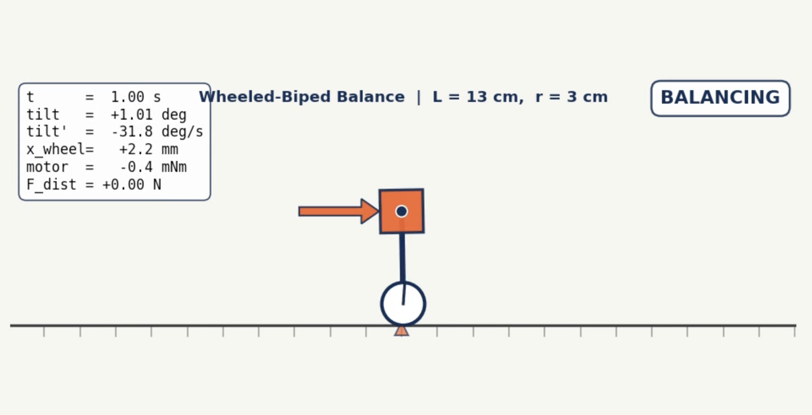
Morphology Sweep Results
A full factorial sweep across 30 configurations evaluated three metrics: maximum recoverable lateral impulse (failure threshold), peak chassis tilt at half threshold, and control effort (torque-time integral) at half threshold. The failure threshold spans 1018–1479 mN·s — a 45% spread driven entirely by geometry. The highest thresholds cluster at L = 17 cm paired with r = 3–4 cm. Critically, large wheels do not uniformly help: because F = τ/r, a larger wheel requires more torque to produce the same ground acceleration, and large-r configurations hit the current ceiling during violent recoveries before reaching the back-EMF speed limit. Control effort grows monotonically with both L and r. The configuration (L = 17, r = 4) cm emerges as the best overall trade-off in simulation.
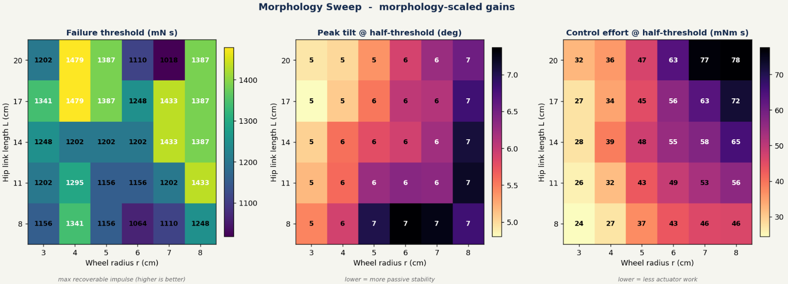
Hardware Testing Protocols
Two physical test protocols are designed to validate the simulation predictions. The Impulse Disturbance Rig uses a pendulum with an adjustable mass and release angle to deliver repeatable lateral impulses to the robot chassis, measuring peak tilt angle, recovery time, and control effort (torque integral) for each morphology configuration. The Obstacle Course Test drives the robot over 3D-printed modular bumps of variable height and spacing, measuring continuous tilt, energy consumed, and success rate under sustained terrain excitation.
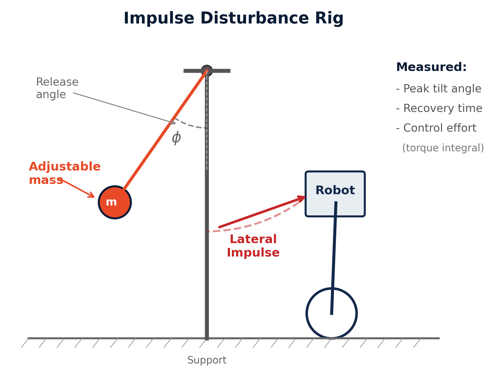
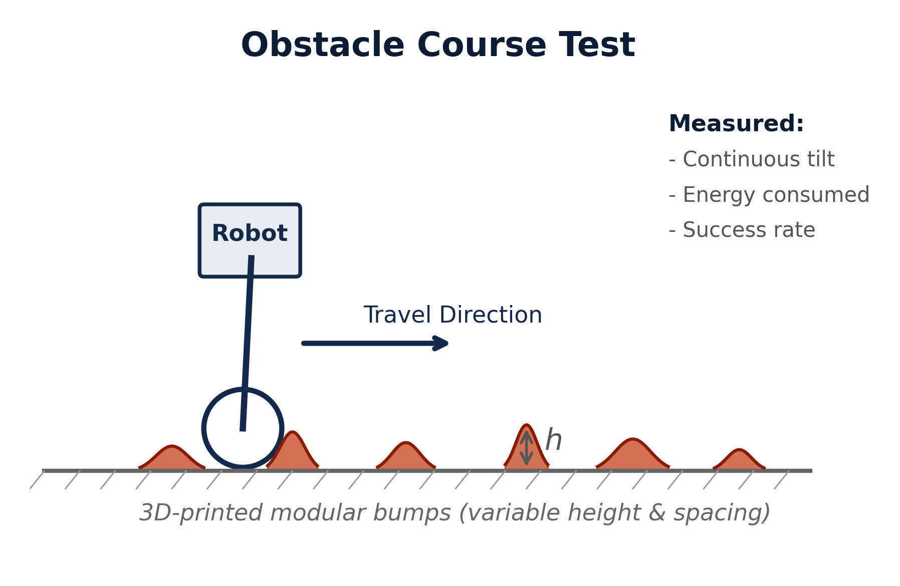
Electronics Stack and Control Architecture
The V3 electronics stack centers on an Arduino Nano ESP32 (ESP32-S3), two iPower GM3506 BLDC motors with SimpleFOC Mini drivers and AS5048A magnetic encoders over SPI, a BNO085 IMU over I2C, and two Waveshare ST3215 HS bus servos over UART for hip actuation. Power is supplied by a 3S LiPo battery; teleoperation is handled by an Xbox controller over Bluetooth via the BluePad32 library. The hip servos run on a separate lower-bandwidth position loop and are not part of the balance loop — the morphology study varies the discrete hip link configuration while holding the controller architecture fixed.
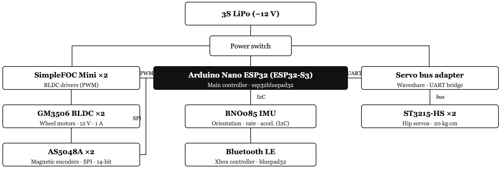
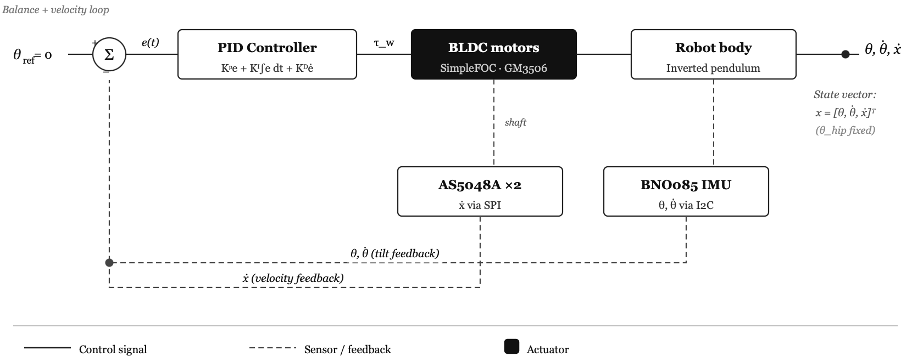
Research Presentation
The work was presented as part of the ME 497 undergraduate research showcase, consolidating the analytical, simulation, and hardware contributions of the spring 2026 semester. The poster summarizes the system model, simulation sweep results, and V3 platform in preparation for the IROS 2026 workshop paper submission.
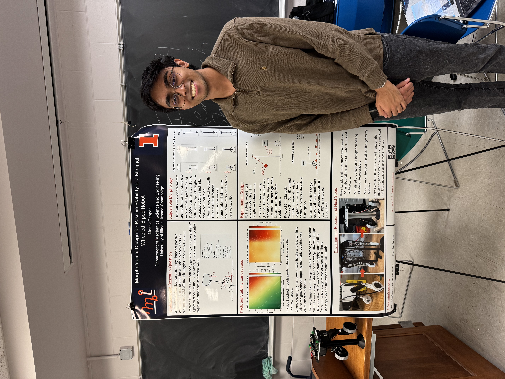
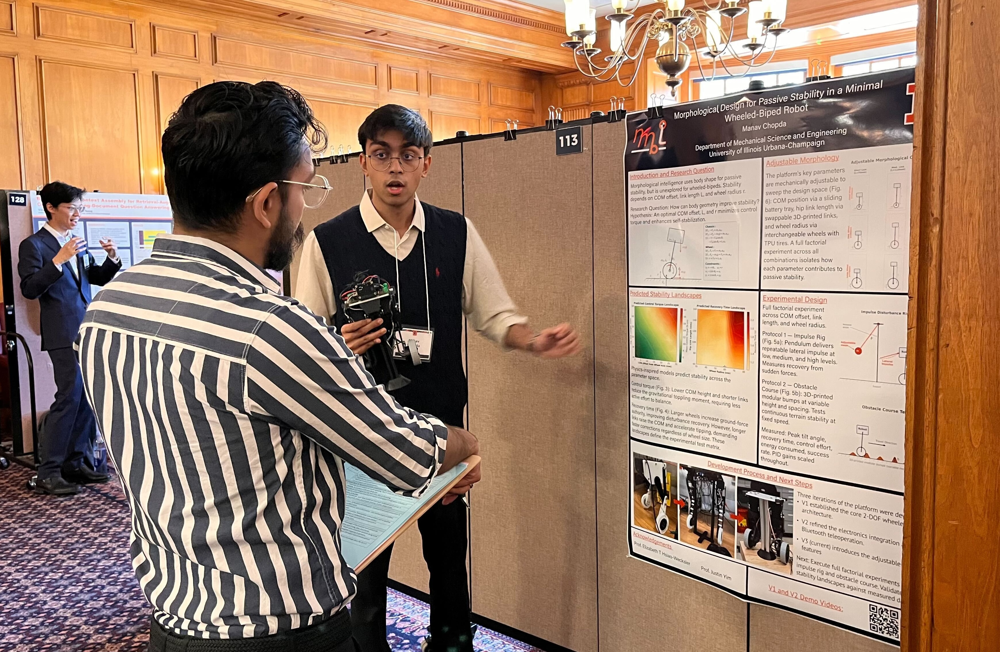
Project Videos
Simulation balancing demonstration and V3 hardware platform in action.
Results and Next Steps
The spring 2026 semester produced a complete analytical foundation, a validated nonlinear simulation, preliminary sweep results identifying (L = 17, r = 4) cm as the best trade-off, and a near-complete V3 hardware platform. The non-monotonic dependence of failure threshold on wheel radius — a regime where adding wheel radius hurts — is the most interesting prediction to confirm on hardware. Next steps include completing V3 final assembly, running the physical disturbance protocol, and comparing hardware measurements against simulation predictions. The target venue is a workshop at IROS 2026 in Pittsburgh with a late-July submission deadline.